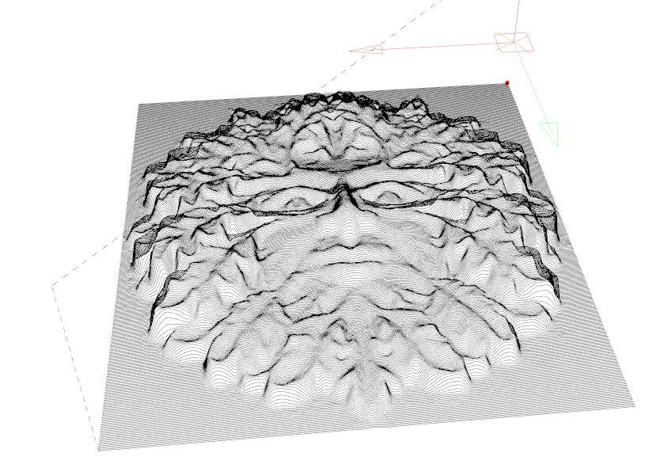
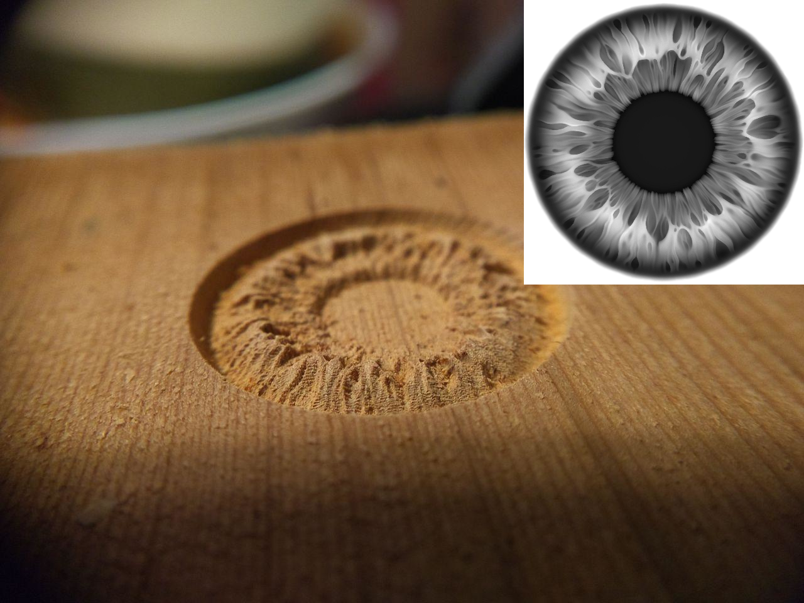
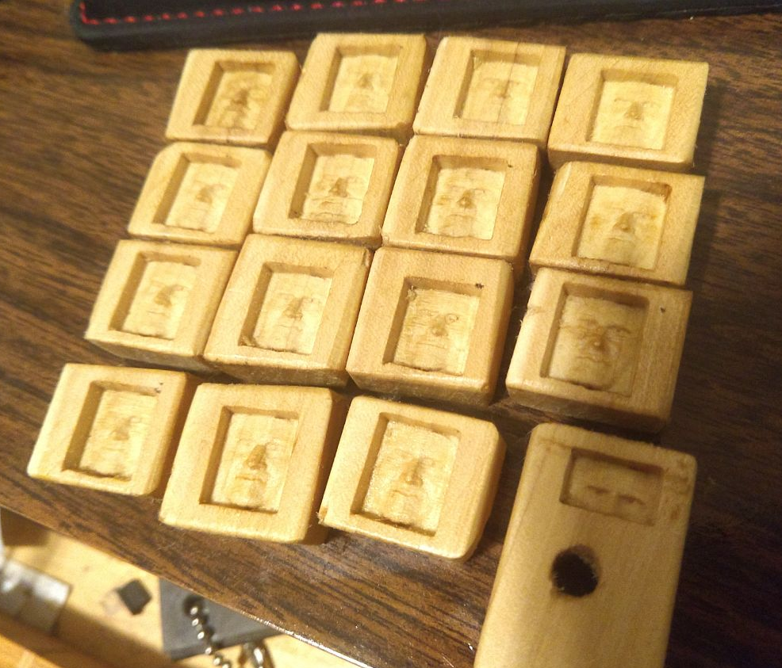
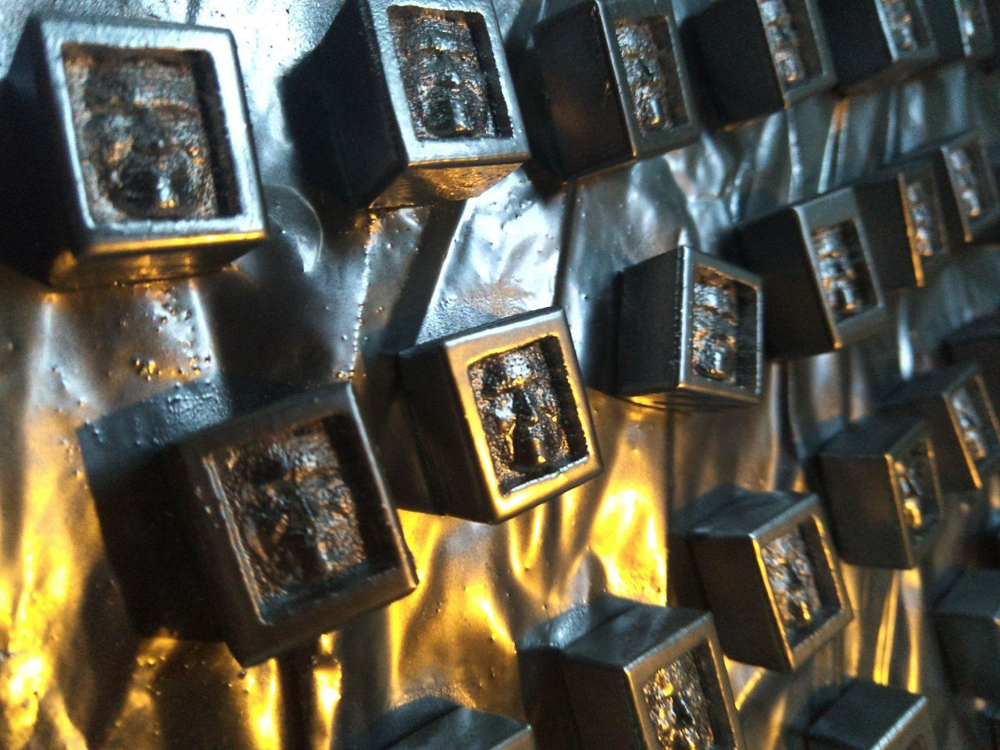
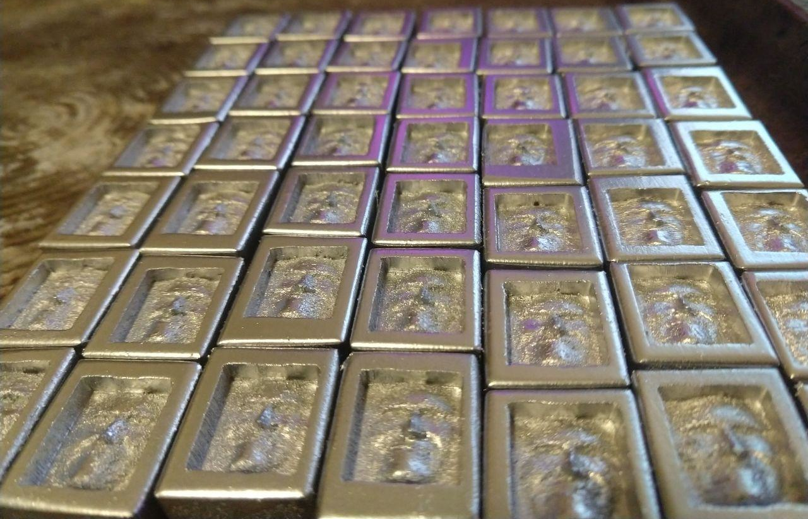
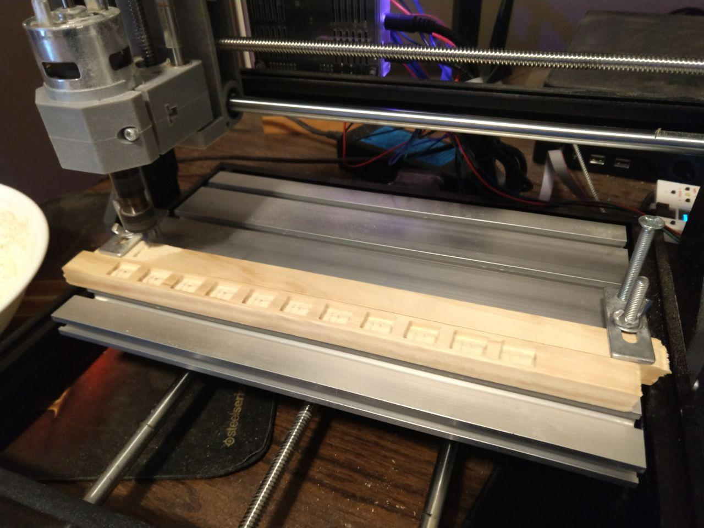
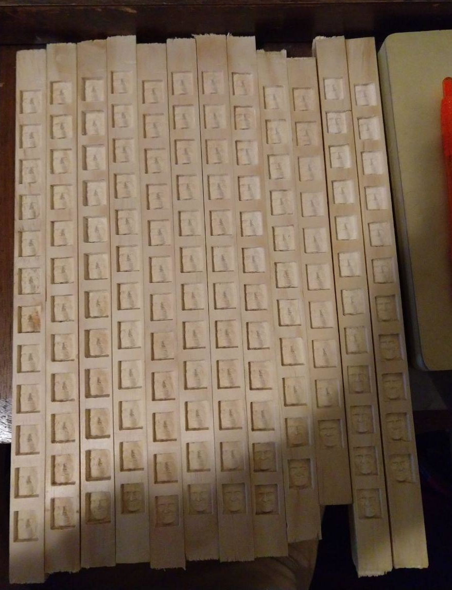
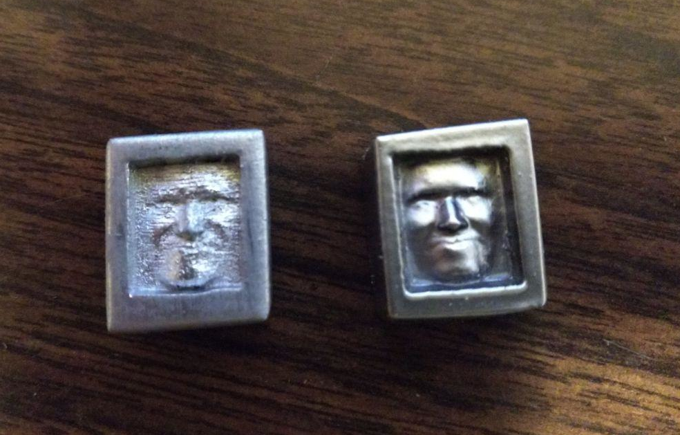
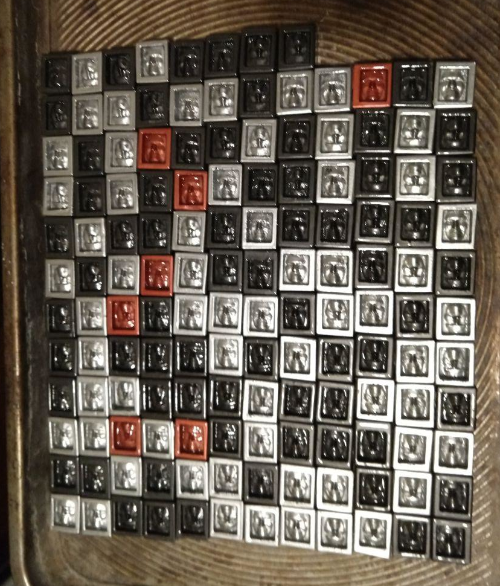

I've always been fascinated by metal as a medium - in high school, I took a number of classes in silversmithing, and my senior year I served as a teaching assistant in the advanced silversmithing classes. I made a lot of chain mail - starting from straight wire, wrapped in a coil around a dowel and then cut into individual rings - several shirts, and a whole lot of bracelets and pendants which I sold to fund my trip to the Centennial Boy Scout Jamborree in 2010. At one point I tried to count up the number of rings I had made and put together, lost count at about a million and a half. All manner of different patterns, which are highly reliant on the ratio of wire diameter to dowel diameter - if you have any interest, there is a great resource for information here.
For my undergrad capstone project, I designed a CNC pattern for the aluminum top plate of our audio mixer. It had cutouts for all the controls for each channel, rotary encoders, slide pots, buttons and a number of small screens. With the assistance of the shop instructor at my school, Thomas Boyle, we used a CNC-converted Bridgeport mill to cut out the pattern in quarter inch aluminum. The same fellow helped me mill a window in a VCR-sized miniITX computer case to handle a Noctua NH-D15 cooler. This was a very interesting operation, and a very cool piece of equipment to learn how to use. There are a lot of things to keep track of when cutting, the rotation speed of the bit as well as the linear feed of the bit across the material are both major considerations to get a good finish, as well as to prevent damage to the bit and the rest of your equipment. More recently, I have spent some time with an older machinist near where I live, and have learned a little bit about manually controlled machine tools for metal and some interesting projects he was working on to remove rust from old castings with electrolysis.
In order to learn more about the process of CNC milling, I found a very cheap kit on Amazon, for about 200USD. It is designed for very light duty, mostly wood and maybe some very light engraving on aluminum. Not really capable of much work with metal, but it is a start, in order to learn about concepts like workholding strategies and how to deal with the effects of vibration. Realistically speaking, this is an incredibly capable machine for the cost, when compared to real manufacturing-scale CNC installations. The only bits that I had to use initially were 20 degree engraver bits, which are essentially a tapered rod with one side ground off to create a blade.
There are three axes of travel on this machine, x, y and z, and a small spindle which can spin at a variable rate. These are all controlled with a very simple syntax called G-code, here an arduino-based implementation called grbl, which specifies movement and other configuration commands as a series of numerical codes. These codes mostly begin with G or M, with G codes representing movement commands and M codes serving miscellaneous functions such as setting spindle speed or marking the end of the program. There are more complex commands, such as those to follow an arc or a helical path, but those are beyond the scope of what I was trying to achieve. I ran several of the patterns that came with the software, and was really impressed at the precision that was possible - you could realistically do 0.01mm maneuvers, with some reliability. Soft wood like pine caused a lot of vibration, which loosened all the fasteners, literally shaking itself apart. I had some pieces of hardwood to try as well, which mitigated this to some extent.
Shown below is a picture of one of my generated patterns, from a heightmap - the axes and red dot indicate where the pattern begins - the solid lines are G0, which is movement at the set feed rate, and the dashed lines are rapid movements, G1, which is simply used to lift the bit once the pattern is finished and home back to the 0 point.
By consulting a few G code references and looking at the code for the example patterns, I was able to put together a simple C++ program which would load a greyscale heightmap, then create a toolpath which would trace it out. I used speeds and feeds from the example patterns, and figured out what G codes did what. Through some trial and error, I got to the point where I had pretty reliable output. There were a few crashes - interesting, compared to software crashes, here a crash is very much a physical thing, either raking a bit across a workpiece because you forgot to lift the bit before homing, or else hitting something solid like one of your clamps because you overestimated the amount of space you had to work in. You can see below a heightmap of the iris, and the resulting cutout, which is about three quarters of an inch in diameter (I had zeroed the bit just above the surface, so as not to trace the entire rectangle represented by the image, just the circle).
This unit had some issues - the coupling between the motor and the ball screw for the x travel started to slip in a way that I was not able to repair. I sent it back and found a replacement unit which had a higher amperage power supply, higher power spindle, and replaced the bakelite uprights with aluminum, at the same 10mm thickness. The bracket holding the spindle is a machined aluminum part, rather than plastic. This should be a much more rigid setup, and allow for some more experimentation with some end mills to remove more material at once. I need to try some different software, as well, since the only way I have to generate patterns right now is my own code, and it is pretty limited in scope to just engraving a shallow heightmap on a flat surface. I want to make some small boxes, with tops and bottoms that fit together - this will be an interesting challenge to plan out toolpaths, especially since I will need to learn the dynamics of end mills versus these engraver bits.
The major project that I did with this first machine, during the time I had it, was cutting out a pattern based on this small face that I found in a research paper, and placing them around my community. I figured out refinements to the process little by little, doing three runs roughly tripling in size each time. The first run turned out pretty good, I cut them apart and then sanded them pretty heavily before covering them in mineral oil - there were 16 of them. I cut them all out of a single piece of stock which was a pretty hard wood, got good results.
The second run, I decided to try out some metallic spray paint - they were much more lightly sanded, and then painted. I had some trouble here figuring out the clear coat, as the metallic I was using did not seem very compatible with it. There were 53 in this run, cut out of a piece of square molding, probably pine.
 By the third run, I had the process going pretty smoothly - at about 15 minutes per face, the cutting process is not very fast - this is due in large part to the limited power of the spindle. The refinements between the second and third run centered around being able to zero the machine at one end of a long piece of stock, send a pattern which would cut out a fair number before I had to come back and align a new piece of stock. In the setup below, I had about three hours of work per 12 inch piece - this was a major improvement in that I didn't need to babysit it as much. The total for this run was about 35 hours of machine time, a total of 140 faces cut out of about 12 feet of the same molding as the second run.
In addition to this, I found out that with the help of some primer, I could get much, much better finishes on them - it filled in the high frequency noise which was present due to vibration - see the comparison between second and third run below. I tried a few different types of metallic, silver, black and red - these were compatible with the clearcoat, and I ended up doing a fairly heavy coat on them. These are ready just in time for halloween.
   Last updated 10/25/2020